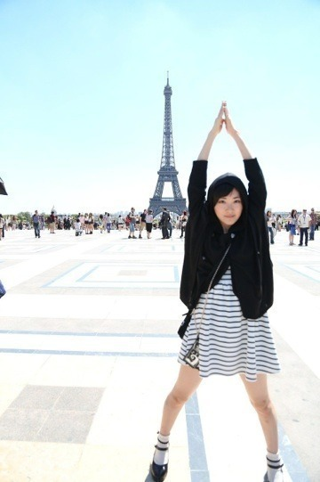
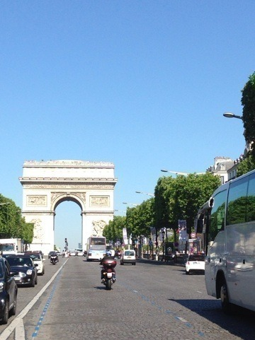
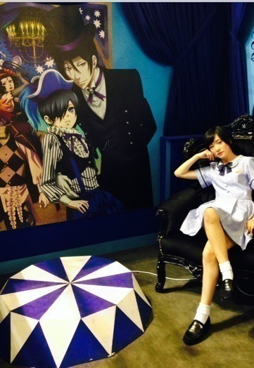
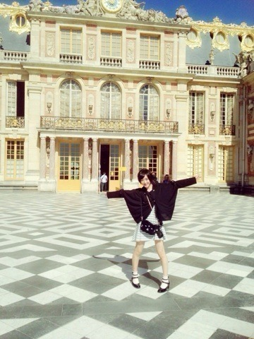
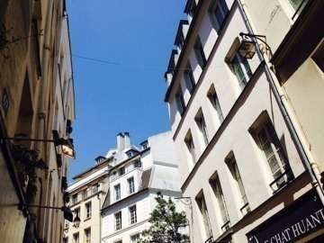

| 2014/07 06 Sun | 帰ってきた生駒ヽ( ・∀・)ノ |
みんな〜
みんな〜ヽ(・∀・)ノ
生駒ちゃんがパリから帰ってきたよん⭐︎
いや〜
時差ボケで大変だったよ〜(；ω；)
でも楽しかったヽ(・∀・)ノ
Japan Expoはガチ二次元オタク丸出しでした。
己の中に眠る獅子という名のオタクが暴れたぜっ

会場で偶然NoGoDさんに会いましたっヽ(・∀・)ノ
MINT NeKOでコラボとかしてたり、曲も聴いてて、まさかフランスで会えるなんてっヽ(・∀・)ノ
レイヤーさんもかわいいし、かっこいいし、
ナルトのカカシ先生のコスプレした女性の方がいたのですが、マジてかっこよ過ぎ、クオリティ高しで鼻血でたよ笑
アニメ二期も始まりましたFree！の怜ちゃんのコスプレした人の背中しか見れなくて、でも背中でもカッコ良くて正面から見たかった(；ω；)
あと黒執事のグレルのこれまた背中しかみれなくて(；ω；)
会場にセバスチャンのコスプレしたひとが超絶かっこよかったと聞いて、でも見れなくてショック(；ω；)
また行きたい

多分あのテンションの生駒ちゃんはかなりヤバイと思います！
ステージは楽しかった！
言葉が通じなくても伝えられる物がある！
でも沢山学びました。
悔しくて泣いたのは久しぶりだったよ。
初めてだからっていう理由じゃなかった。
この課題は自分でしか解決出来ない。
今しか出来ないから今力をつけよう！！
本当、
またチャンスがあるのならその時はもっと光輝く乃木坂46を見せたいです！
では！
フランスでの思い出をちらほら〜

エッフェル塔と生駒ちゃん。

凱旋門ヽ(・∀・)ノ

シエルになりきって撮ってみたけどなんか浮かれポンチな生駒ちゃん。
シエルにはかないませんっ！！

ヴェルサイユ宮殿と生駒ちゃんヽ(・∀・)ノ

街並みヽ(・∀・)ノ
沢山経験させて頂きました！
本当にありがとうございました！
日本から応援に来てくださった皆様ありがとうございました！
そのガッツに拍手ヽ(・∀・)ノ
ではっ！
へばなっ！⭐︎
コメント(765)
2014/07/06 23:30